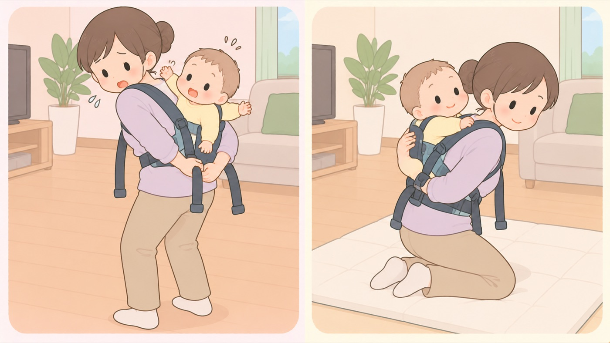

はじめに
離乳食とおんぶで、変わったこと
開始は5〜6か月頃。アレルギーを心配して遅らせる根拠は無い。おんぶは首がすわってから
離乳食の進め方は、この20年で2回更新されています。当時の指導どおりに子育てをした人ほど、いまと違うことを教えてくれます。どちらが正しいかではなく、いつの指針かで見分けます。

左は危険な例、右は安全な例です。- すること：離乳食の本は、2019年以降のものを選ぶ
2007年と2019年で内容が変わっています。手元の本や、人からもらった本の発行年を見ます。2019年より前のものは、卵の扱いがいまと違う可能性があります。 - しないこと：アレルギーが心配だから、と自己判断で遅らせない
こども家庭庁は、湿疹がある場合やすでに食物アレルギーと診断されている場合について、自己判断で対応することで状態が悪化する可能性があるとして、必ず医師の指示に基づいて行うよう求めています。遅らせないことも、遅らせることも、自分で決めません。 - すること：おんぶは「危ないから減った」わけではない、と知っておく
公的機関がおんぶを避けるよう求めている資料は見当たりません。言われているのは、首がすわってから、背負う・降ろす切り替えのときが危ない、背中は様子が確認しにくいの3つです。国民生活センターも、抱っこひもは昔からおんぶひもとして活用されてきた道具だとしています。 - すること：事故の起き方は、抱っことおんぶで違うと知っておく
東京都の調査では、4か月未満は抱っこでの事故が多く（抱っこ34件に対しおんぶ3件）、4か月以上はおんぶに関する事故が過半数を占めます。事故は、抱っこでは前かがみなどの使用中に、おんぶでは着脱時に集中します。くわしくは0〜3か月タブ「抱っこひもからの転落」にまとめました。
この時期に関わるもの
- 離乳食の開始 … いまは生後5〜6か月頃。 1995年の「改定 離乳の基本」では「早くても4か月以降」が目安でした。 2007年の「授乳・離乳の支援ガイド」で5〜6か月頃に変わっています。 1980年代は、5か月未満で始めた人が半数近くいました
- 卵などの開始時期 … 遅らせません。 2019年の改定で、 「食物アレルギーの発症を心配して、離乳の開始や特定の食物の摂取開始を遅らせても、 食物アレルギーの予防効果があるという科学的根拠はない」と明記されました。 同じ改定で、離乳初期に試すものの例に固ゆでした卵黄が加わっています
- おんぶ … いまも避けるべきものではありません。 変わったのは道具の主流で、対面抱っことおんぶを兼ねる抱っこひもが増えました。 おんぶは首がすわってからで、安全基準では4か月からです
この項目の根拠
- 授乳・離乳の支援ガイド 離乳編（平成19年3月14日・厚生労働省・PDF）（新しいタブで開きます）
平成19年3月の「授乳・離乳の支援ガイド」離乳編で、離乳の開始は生後5、6か月頃が適当であるとされたこと。それ以前は平成7年の「改定 離乳の基本」に基づき「早くても4か月以降」が目安とされていたこと。昭和60年時点で5か月未満に離乳を開始した割合が半数近くに上っていたこと。 - 授乳・離乳の支援ガイド（2019年改定版・こども家庭庁・PDF）（新しいタブで開きます）
2019年改定版で、食物アレルギーの発症を心配して離乳の開始や特定の食物の摂取開始を遅らせても食物アレルギーの予防効果があるという科学的根拠はないこと。湿疹がある場合や既に食物アレルギーの診断がされている場合は、自己判断で対応することで状態が悪化する可能性もあるため、必ず医師の指示に基づいて行うこと。離乳初期に試すものの例として固ゆでした卵黄が挙げられていること。 - 抱っこひもからの子どもの落下に注意！─生後数カ月の子どもが頭蓋内損傷などの重篤なけがを負っています─（国民生活センター）（新しいタブで開きます）
抱っこひもは子どもを抱っこすることを補助する道具であり、子守帯やおんぶひもとして昔から活用されてきたこと。抱っこひものSG基準では、背負い式（おんぶ）の適用対象年齢を首がすわった乳児期（4か月）から36か月までの間の任意の範囲としていること。特におんぶなど子どもの状態が確認しにくい姿勢の場合は、できるだけ周囲の人に協力してもらうこと。 - 抱っこひも等の安全対策 東京都商品等安全対策協議会 報告書（東京都・PDF）（新しいタブで開きます）
4か月未満では抱っこでの転落事故が34件、おんぶが3件であったこと。4か月以上ではおんぶに関する事故事例が過半数を占め、着脱時に子供が動くことなどにより転落する事故事例が多いこと。4か月未満では抱っこで前かがみなどメーカーが推奨しない姿勢をした時や、ひもが緩い状態で装着していたことにより脇から子供がすり抜ける事故事例が多い傾向にあること。